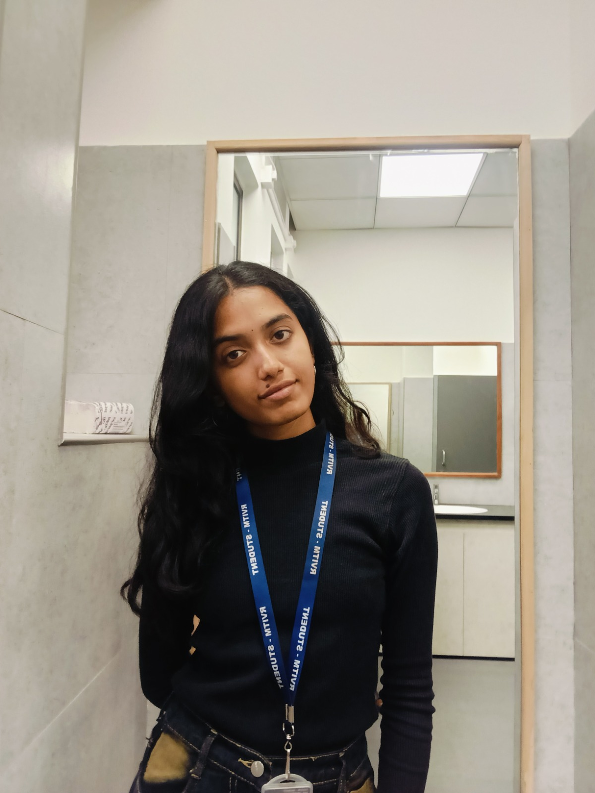

Hi, I'm Supritha C M
Aspiring Data Analyst
Motivated and detail-oriented Computer Science student with a strong academic background (9.16 CGPA) and a passion for software development and data visualization. Eager to turn complex data into actionable insights and build innovative technology solutions.

Analytics & BI
Power BI, Tableau, SQL, Excel, and data visualization tools.
Development
C++, DSA, Python, HTML/CSS.
Problem Solving
Analytical thinker good in algorithm design and database systems.
Personal Details & Biodata
Comprehensive overview of personal background, education, and interests
Personal Information
| Full Name | Supritha C M |
| Role | Aspiring Data Analyst |
| Location | Bengaluru South, Karnataka, India |
| cmsuprithagowda@gmail.com | |
| Phone | +91 8123645119 |
| Languages | English, Kannada |
Academic Background
Bachelor of Engineering - CSE
R V Institute of Technology, Bengaluru
CGPA: 9.16 / 10.0
Pre-University College (PCMB)
Jnanasweekar PU College, Bengaluru
Percentage: 94.5%
Interests & Hobbies
Resume
Detailed technical profile, skills, certifications, and project work
Professional Profile
Motivated and detail-oriented Computer Science student with a strong academic background and a passion for software development and emerging technologies. Possess foundational knowledge in programming languages such as C++, SQL, Excel, PowerBI, Tableau along with an understanding of software development concepts, databases, and problem-solving techniques. Eager to apply technical knowledge to build efficient and innovative software solutions while learning from real-world industry projects.
Technical & Soft Skills
Analytics & Visualization
Programming & Web
Soft Skills
Key Projects
A-Grid Navigator
C++, JavaScript, HTML, CSS, A* AlgorithmA sleek pathfinding visualizer that demonstrates efficient robotic grid navigation and real-time obstacle avoidance. Built with vanilla web technologies for the interactive frontend and C++ for core algorithm implementation. Features real-time visualization of the A* algorithm.
Database Management System (DBMS) Project
SQL, ACID Properties, IndexingCreated a comprehensive DBMS project applying schema design, ACID properties, indexing strategies, and query execution. Developed backend components for data persistence, concurrent access management, and efficient record retrieval operations.
Certifications
- Getting Started with Artificial Intelligence - IBM SkillsBuild (Oct 2024)
- Generative AI for Beginners - Simplilearn | SkillUP (Oct 2025)
- Programming Fundamentals: CLI & OS Commands - Infosys | Springboard (Dec 2025)
- Introduction to Java - Infosys | Springboard (Dec 2025)
- SQL (Basic) - HackerRank (Feb 2026)